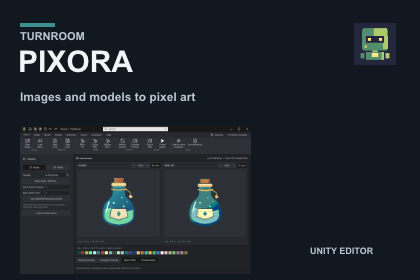
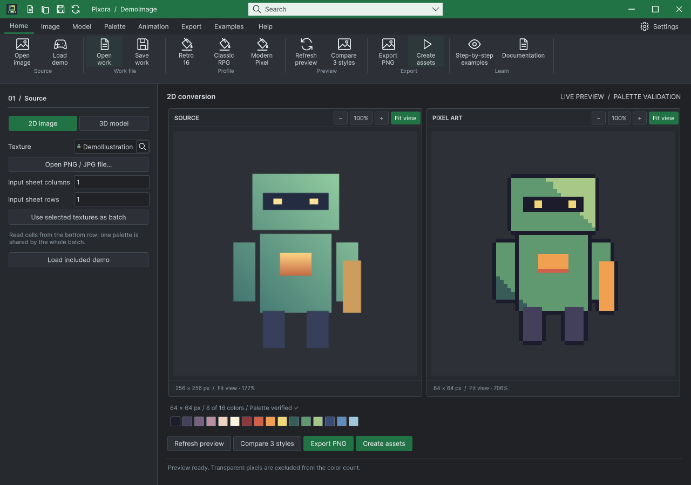
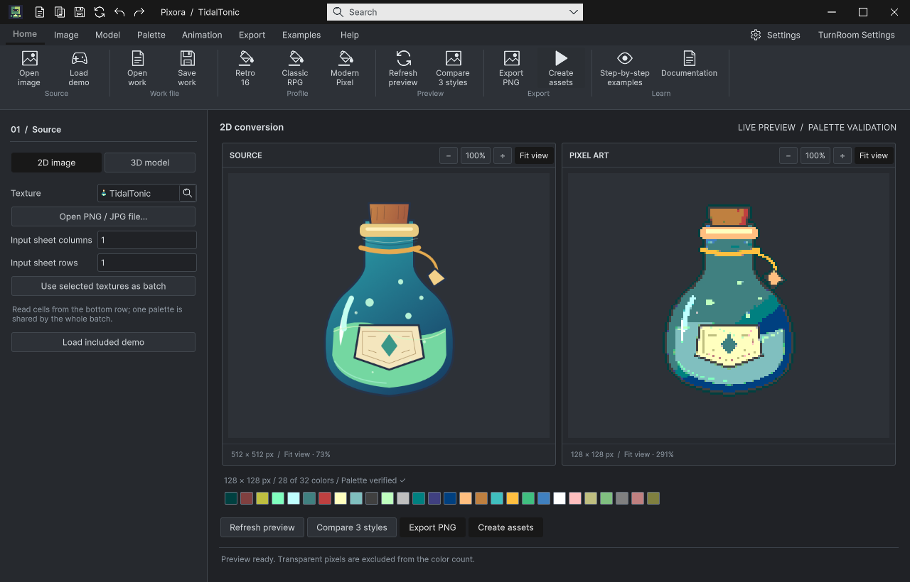

Tracefolio REPORTS & ISSUES
Tracefolio REPORTS & ISSUESPixora 1.0.0 · 언어·검증·판매 초안
완료최종 패키지·실제 실행 영상·Affinity 원본과 제출 전 판매 초안 저장을 확인했습니다.
작업 결과
Pixora 1.0.0의 구현·최종 패키지 설치·미디어 검증을 마쳤고 판매 초안 저장값을 다시 열어 확인했습니다. 최종 제출은 하지 않았습니다.
변경 내용
적용 내용
공통 언어 설정 진입점과 가이드를 연결하고, 편집 문서의 이미지·팔레트·모델 캡처 상태 보존을 설치본에서 검증했습니다. 커버·썸네일과 실제 편집/모델 캡처 영상을 완성했습니다.

검증
설치본의 저장→닫기→재열기→편집→재출력 12개 검사와 새 프로세스 복원 3개 검사 통과. 여러 창의 상태를 구분했으며, 실제 키보드 Undo/Redo를 UI 재구성 후 반복해 32↔128 변경을 확인했습니다.


실제 실행 영상 · 1920×1080 / 24 FPS / 60초 · 1,440프레임과 전체 디코딩, 자막 가독성을 검증했습니다.
Affinity 3.3.1.4940 커버/카드 8개는 저장→닫기→재열기 후 렌더 픽셀이 같았습니다. 애니메이션 GIF의 실제 내보내기 경로는 검증하지 못해 정지 전후 화면을 제공합니다.
판매 초안 재열기: 버전 1.0.0, 마케팅 이미지3개, 영상1개, 실제 화면1개. 제출 버튼 활성화까지 확인했으며 누르지 않았습니다. 브라우저에서도 실제60초 전체 재생이 오류 없이 끝났습니다.
남은 사항
연결된 모델·애니메이션 클립은 작업 문서와 함께 보관해야 합니다. 모든 플랫폼·키보드 조합을 인증한 검사는 아닙니다.
최종 제출·스토어 심사는 수행하지 않습니다. 판매 가격은 기존/포털 기본값을 유지하며 제출 전에 소유자가 확정해야 합니다.
교훈: 배포 파일/해시 고정 후 설치·업로드 규칙을 전역 지침에 추가·동기화·푸시했습니다(8eb390e). 일반화하지 않은 제품별 오류·과거 실패는 별도 근거에 보존했습니다.
작업 시간
- 제안 시간: 최대10시간. 2026-11-01 23:52:12 KST 시작, 2026-11-02 09:52:12 KST 마감.
- 실제로 완료된 시간: 4개 제품 공동 작업 경과 9시간 36분 4초. 제품·패키지·미디어·판매 초안 확인 기준 시각 2026-11-02 09:28:16 KST. 제품별 독립 소요 시간은 분리 기록하지 않았습니다. 공개 보고서 배포 확인은 이후 전체 종료 기록으로 구분합니다.
- XERJ: 사용 — XERJ로 공통 Editor·Workbook 관련 심볼을 검색하고 현재 소스와 대조했습니다. Runtime·신제품 및 SDK는 인덱스 범위 밖이어서 rg를 병행했습니다.